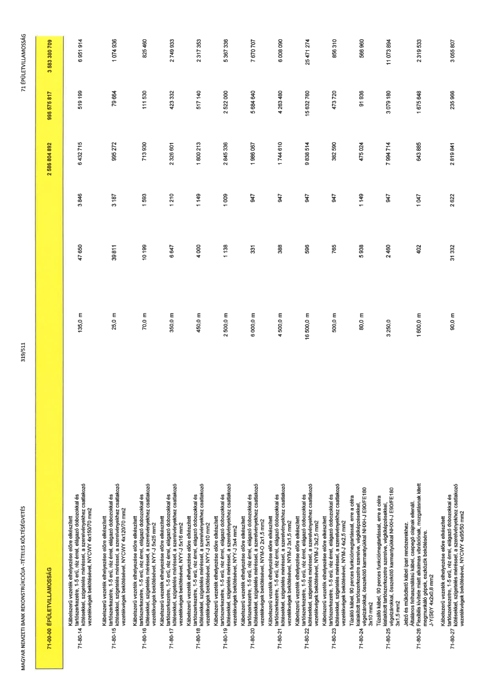

| Tétel | Menny. | Egys. | Anyag e.ár (net HUF) | Díj e.ár (net HUF) | Anyag összesen (net HUF) | Díj összesen (net HUF) | Anyag+Díj összesen (net HUF) |
|---|---|---|---|---|---|---|---|
| 71-00-00 ÉPÜLETVILLAMOSSÁG | NaN | NaN | 0 | 0 | 2 586 804 892 | 996 575 817 | 3 583 380 709 |
| Kábelszerű vezeték elhelyezése előre elkészített tartószerkezetre, 1-5 erű, réz érrel, elágazó dobozokkal és kötésekkel, szigetelés méréssel, a szerelvényekhez csatlakozó vezetékvégek bekötésével, NYCWY 4x150/70 mm2 | 0 | 0 | 0 | 0 | 0 | 0 | 0 |
| 71-80-14 | 135,0 | m | 47 650 | 3 846 | 6 432 715 | 519 199 | 6 951 914 |
| Kábelszerű vezeték elhelyezése előre elkészített tartószerkezetre, 1-5 erű, réz érrel, elágazó dobozokkal és kötésekkel, szigetelés méréssel, a szerelvényekhez csatlakozó vezetékvégek bekötésével, NYCWY 4x120/70 mm2 | 0 | 0 | 0 | 0 | 0 | 0 | 0 |
| 71-80-15 | 25,0 | m | 39 811 | 3 187 | 995 272 | 79 664 | 1 074 936 |
| Kábelszerű vezeték elhelyezése előre elkészített tartószerkezetre, 1-5 erű, réz érrel, elágazó dobozokkal és kötésekkel, szigetelés méréssel, a szerelvényekhez csatlakozó vezetékvégek bekötésével, NYY-J 5x25 mm2 | 0 | 0 | 0 | 0 | 0 | 0 | 0 |
| 71-80-16 | 70,0 | m | 10 199 | 1 593 | 713 930 | 111 530 | 825 460 |
| Kábelszerű vezeték elhelyezése előre elkészített tartószerkezetre, 1-5 erű, réz érrel, elágazó dobozokkal és kötésekkel, szigetelés méréssel, a szerelvényekhez csatlakozó vezetékvégek bekötésével, NYY-J 5x16 mm2 | 0 | 0 | 0 | 0 | 0 | 0 | 0 |
| 71-80-17 | 350,0 | m | 6 647 | 1 210 | 2 326 601 | 423 332 | 2 749 933 |
| Kábelszerű vezeték elhelyezése előre elkészített tartószerkezetre, 1-5 erű, réz érrel, elágazó dobozokkal és kötésekkel, szigetelés méréssel, a szerelvényekhez csatlakozó vezetékvégek bekötésével, NYY-J 5x10 mm2 | 0 | 0 | 0 | 0 | 0 | 0 | 0 |
| 71-80-18 | 450,0 | m | 4 000 | 1 149 | 1 800 213 | 517 140 | 2 317 353 |
| Kábelszerű vezeték elhelyezése előre elkészített tartószerkezetre, 1-5 erű, réz érrel, elágazó dobozokkal és kötésekkel, szigetelés méréssel, a szerelvényekhez csatlakozó vezetékvégek bekötésével, NYY-J 3x4 mm2 | 0 | 0 | 0 | 0 | 0 | 0 | 0 |
| 71-80-19 | 2 500,0 | m | 1 138 | 1 009 | 2 845 336 | 2 522 000 | 5 367 338 |
| Kábelszerű vezeték elhelyezése előre elkészített tartószerkezetre, 1-5 erű, réz érrel, elágazó dobozokkal és kötésekkel, szigetelés méréssel, a szerelvényekhez csatlakozó vezetékvégek bekötésével, NYM-O 2x1,5 mm2 | 0 | 0 | 0 | 0 | 0 | 0 | 0 |
| 71-80-20 | 6 000,0 | m | 331 | 947 | 1 986 067 | 5 684 640 | 7 670 707 |
| Kábelszerű vezeték elhelyezése előre elkészített tartószerkezetre, 1-5 erű, réz érrel, elágazó dobozokkal és kötésekkel, szigetelés méréssel, a szerelvényekhez csatlakozó vezetékvégek bekötésével, NYM-J 3x1,5 mm2 | 0 | 0 | 0 | 0 | 0 | 0 | 0 |
| 71-80-21 | 4 500,0 | m | 388 | 947 | 1 744 610 | 4 263 480 | 6 008 090 |
| Kábelszerű vezeték elhelyezése előre elkészített tartószerkezetre, 1-5 erű, réz érrel, elágazó dobozokkal és kötésekkel, szigetelés méréssel, a szerelvényekhez csatlakozó vezetékvégek bekötésével, NYM-J 3x2,5 mm2 | 0 | 0 | 0 | 0 | 0 | 0 | 0 |
| 71-80-22 | 16 500,0 | m | 596 | 947 | 9 838 514 | 15 632 760 | 25 471 274 |
| Kábelszerű vezeték elhelyezése előre elkészített tartószerkezetre, 1-5 erű, réz érrel, elágazó dobozokkal és kötésekkel, szigetelés méréssel, a szerelvényekhez csatlakozó vezetékvégek bekötésével, NYM-J 4x2,5 mm2 | 0 | 0 | 0 | 0 | 0 | 0 | 0 |
| 71-80-23 | 500,0 | m | 765 | 947 | 382 590 | 473 720 | 856 310 |
| Tűzálló kábel, 90 perces funkciómegtartással, erre a célra kialakított tartószerkezetre szerelve, végkiképzésekkel, végelzárókkal, összekötő karmantyúkkal NHXH-J E90/FE180 3x10 mm2 | 0 | 0 | 0 | 0 | 0 | 0 | 0 |
| 71-80-24 | 80,0 | m | 5 938 | 1 149 | 475 024 | 91 936 | 566 960 |
| Tűzálló kábel, 90 perces funkciómegtartással, erre a célra kialakított tartószerkezetre szerelve, végkiképzésekkel, végelzárókkal, összekötő karmantyúkkal NHXH-J E90/FE180 3x1,5 mm2 | 0 | 0 | 0 | 0 | 0 | 0 | 0 |
| 71-80-25 | 3 250,0 | m | 2 460 | 947 | 7 994 714 | 3 079 180 | 11 073 894 |
| Jelző és működtető kábel ipari rendszerekhez. Általános felhasználású kábel, csepegő olajnak ellenáll. Flexibilis kivitele miatt alkalmas vibrációnak, mozgatásnak kitett megmunkáló gépek, eszközök bekötésére. J-Y(St)Y 4x2x0,8 mm2 | 0 | 0 | 0 | 0 | 0 | 0 | 0 |
| 71-80-26 | 1 600,0 | m | 402 | 1 047 | 643 885 | 1 675 648 | 2 319 533 |
| Kábelszerű vezeték elhelyezése előre elkészített tartószerkezetre, 1-5 erű, réz érrel, elágazó dobozokkal és kötésekkel, szigetelés méréssel, a szerelvényekhez csatlakozó vezetékvégek bekötésével, NYCWY 4x35/50 mm2 | 0 | 0 | 0 | 0 | 0 | 0 | 0 |
| 71-80-27 | 90,0 | m | 31 332 | 2 622 | 2 819 841 | 235 966 | 3 055 807 |
